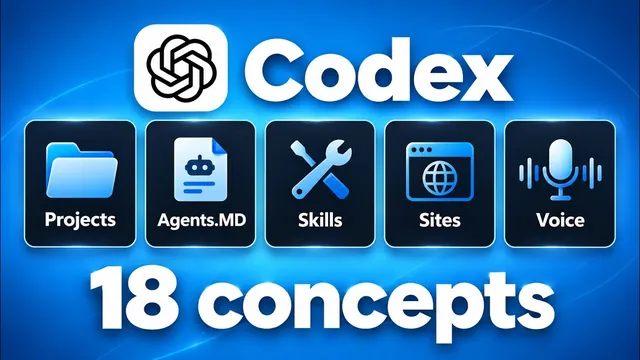

코딩 몰라도 되는 Codex 개념 총정리

원본 영상 보기 →
- AI의 기억은 '파일'로 만들어요
- 목표를 주고 물러나는 쪽이 더 잘 됩니다
- 모든 작업에 최고 모델을 쓸 필요는 없어요
한 줄 요약
코딩을 몰라도 Codex를 바로 쓸 수 있게, Nate Herk가 18가지 핵심 개념을 정리했어요. 프로젝트와 agents.md부터 스킬, 서브에이전트, 예약 작업, 음성 모드까지 기초 → 환경 → 제어·사용자 지정 → 도구·규모 네 파트로 나눠서 실제 화면과 함께 설명합니다.
전체 내용 정리
프로젝트와 agents.md가 있으면 나를 매번 다시 설명할 필요가 없어요
웹에서 ChatGPT나 Claude를 쓰면 새 대화를 열 때마다 내가 누구고 무슨 일을 하고 이번 주에 뭘 하는지 다시 설명해야 하죠.
Codex의 프로젝트(Project)는 사실 컴퓨터 안의 폴더와 파일 묶음일 뿐이에요. 그런데 여기에 규칙과 자격 증명, 진행 중인 작업 자료를 모아 두면 작업할수록 Codex가 나를 더 잘 알게 됩니다.
Nate는 'Herc 2'라는 프로젝트를 자신의 AI 운영체제로 쓰고 있어요. "지난달 함께 작업한 내용을 요약해 줘"라고 하면 Codex가 이전 대화까지 훑어서 YouTube 전략·AI 모델 테스트·웹사이트·비즈니스 운영 작업을 정리해 줍니다.
프로젝트마다 들어가는 agents.md는 겁먹을 필요 없어요. 그냥 마크다운(.md) 규칙 파일입니다. "너는 Nate Herk의 AI 운영체제야, 운영 업무 시간을 줄여서 YouTube 제작에 집중하게 도와" 같은 역할과 규칙을 적어 둬요.
핵심은 '라우팅' 지도입니다. 수천 개 파일 중에 비즈니스 정보는 위키, 목소리는 여기, 강좌 지식은 저기 하는 식으로 위치를 알려주는 거죠. Codex는 내 메시지를 읽기 전에 항상 agents.md부터 봅니다.
에이전트 루프와 /goal: 목표에 닿을 때까지 반복해요
Codex, Claude Code, Hermes 같은 걸 '에이전트 하니스(agent harness)'라고 부릅니다. 각자 고유한 에이전트 루프(agent loop)를 갖고 있기 때문이에요. 질문을 받으면 생각하고, 도구를 써서 행동하고, 다시 생각하는 과정을 반복합니다.
Codex에서는 이 과정을 펼쳐 볼 수 있어요. "최근 YouTube 영상에서 재밌는 댓글 3개만 알려줘"라고 하자, memory.md(규칙이 아니라 기억을 담은 파일)를 읽고 명령어를 실행해 YouTube 데이터를 가져오는 과정이 그대로 보였습니다.
Nate가 가장 좋아하는 기능은 /goal이에요. 목표를 주면 장애물에 부딪혀도 다른 방법을 시도하면서 달성할 때까지 반복합니다. "자료 257개를 수집해 보고서 작성"처럼 객관적일수록 효과가 좋아요. 이 영상의 모션 그래픽(인트로 1개에 카드 18개)도 Hyperframes 프로젝트에서 /goal 프롬프트 하나로 만들었고, 모델이 스크린샷으로 직접 검수까지 했습니다.
조언이 하나 있어요. 요즘 모델은 똑똑해서 사사건건 지시하면 오히려 능력을 가둡니다. 위험한 일이 아니면 목표만 주고 한발 물러나세요.
Claude Code에서 넘어오는 경우엔 Claude.md를 복사해 agents.md로, 스킬과 설정을 .agents 폴더로 옮기면 됩니다. 이것도 "Codex에서 바로 쓸 수 있게 해 줘"라고 시키면 알아서 해요.
로컬이냐 클라우드냐: 내 작업이 어디서 도는지 알기
'로컬'은 지금 쓰는 기기에만 존재해서 나만 접근할 수 있다는 뜻이에요. Codex가 만든 결과물도 마찬가지라, 127.0.0.1:8008 같은 로컬호스트 주소는 웹 주소처럼 생겼어도 남에게 보내면 안 열립니다. 초보인 척 localhost 링크를 잔뜩 자랑하는 농담 트윗이 돌았던 이유죠.
로컬 모드에서는 Codex가 내 파일을 직접 만들고 고치고 옮기며, 다운로드나 바탕화면 폴더에도 접근합니다. 클라우드 모드를 고르면 샌드박스 환경이라 모델과 권한 설정이 막혀요.
Nate는 클라우드 모드를 거의 안 씁니다. PC만 켜두면 ChatGPT 휴대폰 앱의 'remote'로 데스크톱 Codex 대화를 그대로 이어서, 산책 중에도 "그 파일 이메일로 보내 줘"라고 시킬 수 있거든요.
워크트리(work tree)는 프로젝트 복사본을 만들어 메인 작업을 방해하지 않고 실험하는 기능인데, 소프트웨어 개발이 아니면 거의 쓸 일이 없어요. .codex 폴더는 프로젝트 안(에이전트·워크플로우·config.toml)과 사용자 계정 아래 전역(메모리·세션·자동화) 두 곳에 있습니다. 평소 신경 쓸 필요는 없고, 헷갈리면 "방금 뭐 한 거야? 이걸 .codex에 넣어야 해?"라고 물으면 Codex가 자기 문서를 찾아서 답해 줘요.
모델·노력 수준·권한은 비용 다이얼이에요
새 대화를 열 때는 물론 대화 중간에도 모델을 바꿀 수 있습니다. 지금은 GPT-6 Astra가 가장 강력하지만 주간 사용량을 가장 빨리 깎아요. 그다음이 GPT-5.6 Sol, 5.6 Terra 순으로 가볍습니다.
API 가격으로는 Astra가 입력 토큰 100만 개당 10달러, 출력 토큰 100만 개당 50달러예요. 그런데 Codex 구독(월 20·100·200달러)은 사용 한도를 쓰는 방식이라 훨씬 쌉니다. Nate는 월 200달러 구독으로 주간 한도를 다 쓰면 매달 약 14,000달러어치 추론을 얻는다고 계산했어요. 한도를 넘으면 2,500·5,000·25,000 단위 크레딧을 삽니다.
토큰은 대략 4글자, 또는 단어의 4분의 3쯤이에요. 274자 단락이 약 56토큰입니다. 내가 넣는 프롬프트와 PDF는 입력이고, 모델의 추론 과정을 포함한 모든 결과물은 출력이라 출력이 더 비싸요.
노력 수준(effort)은 낮음부터 아주 높음까지 있는데, 올릴수록 똑똑해지고 비싸집니다. 이메일 쓰는 데 Astra 높음을 쓰는 건 과해요. 5.6 Terra로 충분합니다. 빠른 모드(Fast)는 1.5배 빠른 대신 사용량을 더 씁니다.
권한은 세 가지예요. '전체 액세스'는 묻지 않고 실행하는 일종의 YOLO 모드, '승인 요청'은 외부 파일 편집이나 인터넷 사용 때마다 확인, '자동 승인'은 삭제나 특정 API 호출처럼 위험한 것만 확인합니다. 처음엔 승인 요청으로 시작해서 에이전트 루프에 익숙해지는 게 좋아요.
스킬은 레시피예요
스킬(skill)은 재사용 가능한 워크플로우, 그러니까 레시피입니다. 초콜릿칩 팬케이크를 태웠다면 "양면을 30초씩 덜 구워라"라고 레시피를 고치잖아요. 똑같이 실행할 때마다 "이 부분은 좋고 저 부분은 별로야, 스킬 업데이트해"라고 피드백해서 다듬습니다.
Nate가 YouTube 영상 파일 경로를 주자 Codex가 영상 설명과 타임스탬프, LinkedIn 게시물을 만들고, 썸네일·제목·영상 스크린샷까지 배치한 X 아티클 초안을 저장했어요. 이게 가능했던 건 YouTube 설명, 타임스탬프, LinkedIn 게시물, X 아티클 서식 등 6개 스킬 덕분입니다.
스킬은 자연어로도, 슬래시 명령어로도 실행돼요. 저장 위치는 .agents 폴더(프로젝트 수준 또는 사용자 전역)의 skill.md입니다. 맨 위 메타데이터(이름, 언제 쓰는지)를 보고 Codex가 호출 여부를 판단하고, 본문은 "설명은 짧게, 2~3문장 단락으로, 글머리 기호 쓰지 마" 같은 지침일 뿐이에요. 스킬이 다른 스킬이나 에이전트, 파이썬 파일, 보이스 가이드라인 같은 파일을 참조할 수도 있습니다.
플러그인(plugin) 탭에서는 Alpaca, Gmail, ClickUp, Clay, Google Drive, GitHub, Canva, LinkedIn 같은 걸 로그인 한 번으로 연결해요. 플러그인이 없으면 .env 파일이나 API 키로 붙입니다.
규모를 키우는 도구들
내장 브라우저는 로그인 정보를 저장해 둬서, 플러그인이나 API, MCP 서버가 없는 Skool 같은 서비스도 "저 계정 가서 보고서 뽑아 줘"로 처리할 수 있어요. GPT-6 Astra와 결합한 브라우저 사용 능력은 Nate가 써본 것 중 최고였다고 합니다. Canva에서 사진을 보고 Nate를 그려 색칠하기도 했대요.
사이트(Sites)는 로컬호스트로만 보이던 결과물을 클라우드에 올려서, URL이 있는 누구나 또는 로그인한 나만 볼 수 있게 합니다. 분석 도구와 자체 도메인, 데이터베이스까지 지원해서 Vercel이나 Squarespace를 대체할 수 있어요. "이걸 사이트로 만들어 줘" 또는 /site로 씁니다.
서브에이전트(sub-agent)는 비싼 Astra의 두뇌를 아끼는 기능이에요. 조사는 5.6 Terra 모델의 작은 일꾼들에게 맡깁니다. X, YouTube 펄스, X 드라마, 오디언스 코멘트 등 5개 에이전트가 병렬로 조사해서 보고했어요.
예약 작업(scheduled task)은 정해진 시간에 Codex 세션에 프롬프트를 주입하는 것일 뿐입니다. 같은 파일·스킬·모델·에이전트 루프를 그대로 써요. Nate는 실제 돈 1만 달러로 트레이딩하는 7~8개 설정을 예약 작업으로 돌리고 있습니다.
마지막으로 음성 모드(voice mode)로는 이 모든 걸 말로 제어할 수 있어요. "썸네일 만드는 새 스레드 시작하고 완성되면 채널 분석 스레드로 보내 줘"라고 말하자, 워크트리 채팅과 에이전트 루프, 목표 생성까지 스스로 엮어서 썸네일을 다른 스레드로 넘겼습니다.
핵심 인사이트
- AI의 기억은 '파일'로 만들어요: 프로젝트 폴더와 agents.md, memory.md, 스킬이 결국 AI가 나를 아는 방식입니다. 도구가 바뀌어도 로컬 파일은 남으니 Claude Code든 Codex든 옮겨 쓸 수 있는 자산이 돼요.
- 목표를 주고 물러나는 쪽이 더 잘 됩니다: /goal처럼 객관적인 완료 기준을 주면 모델이 막혀도 스스로 우회해서 끝냅니다. 사사건건 지시하면 똑똑한 모델의 능력을 오히려 가둬요.
- 모든 작업에 최고 모델을 쓸 필요는 없어요: 모델, 노력 수준, 빠른 모드, 서브에이전트 모델 지정은 결국 비용 다이얼입니다. 이메일은 가벼운 모델, 조사는 저렴한 서브에이전트, 판단은 비싼 모델로 나누는 게 한도를 지키는 법이에요.
오늘 당장 해볼 것
- 지금 쓰는 AI 도구(ChatGPT 프로젝트, Claude 프로젝트 등)에 "나는 누구고, 무슨 일을 하고, 이렇게 일해 줘"를 담은 규칙 메모 한 장을 만들어 프로젝트 지침에 붙여 보세요. 매번 설명하는 수고가 사라집니다.
- 매주 반복하는 글쓰기 작업 하나를 골라 보세요. 상담 후기 정리나 블로그 요약 같은 거요. 결과가 마음에 들 때 "이 방식을 다음에도 쓸 수 있게 단계별 지침으로 정리해 줘"라고 하면 나만의 레시피가 됩니다.
- 자동화를 맡기는 업체가 있다면 "어떤 작업에 어떤 모델을 쓰고, 월 사용 한도와 비용은 어떻게 관리하나요?"를 물어보세요. 비싼 모델이 엉뚱한 일에 쓰이고 있을 수 있어요.